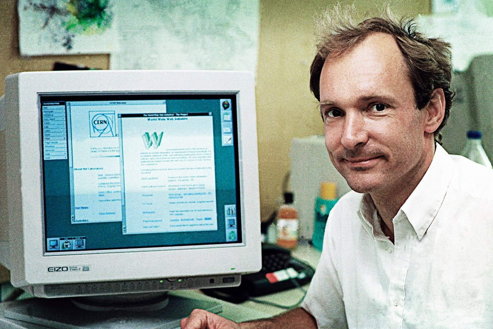

Página atual - Sobre
Role o scroll do mouse para mais informações
Zoom ideal - 175%

Em 1989, enquanto trabalhava no CERN, o laboratório europeu de física de partículas, Berners-Lee propôs a criação da WWW. Ele desenvolveu o primeiro cliente e servidor da web em 1990. Sua visão era criar uma rede global de informações interconectadas, acessível a todos.
Berners-Lee introduziu o conceito de hipertexto, permitindo que documentos fossem interligados por meio de links. Isso possibilitou a navegação não linear na web, onde os usuários podem saltar de um conteúdo para outro com facilidade.
Ele definiu especificações cruciais, como URLs (Uniform Resource Locators), HTTP (Hypertext Transfer Protocol) e HTML (Hypertext Markup Language). Esses padrões ainda são a base da web moderna.
Berners-Lee optou por não patentear sua invenção, tornando a WWW acessível a todos sem restrições. Ele acreditava na colaboração e no compartilhamento global de conhecimento.
Ele é um forte defensor da neutralidade da rede, lutando para garantir que a internet permaneça aberta e igualitária para todos os usuários.
- Icaro Clemente da Silva